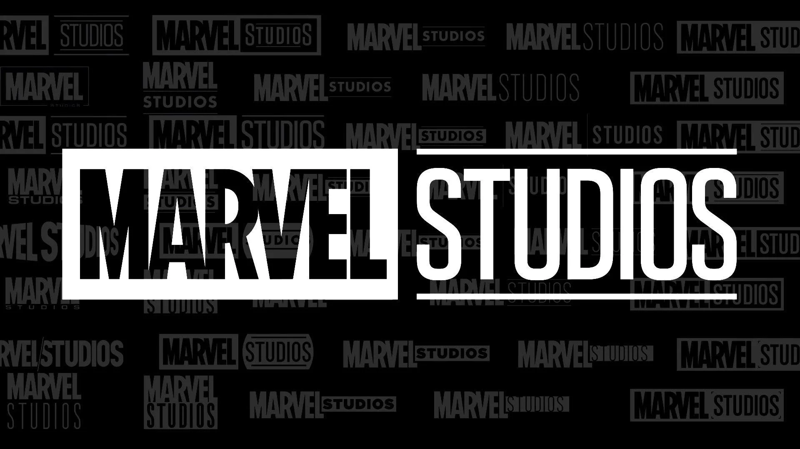
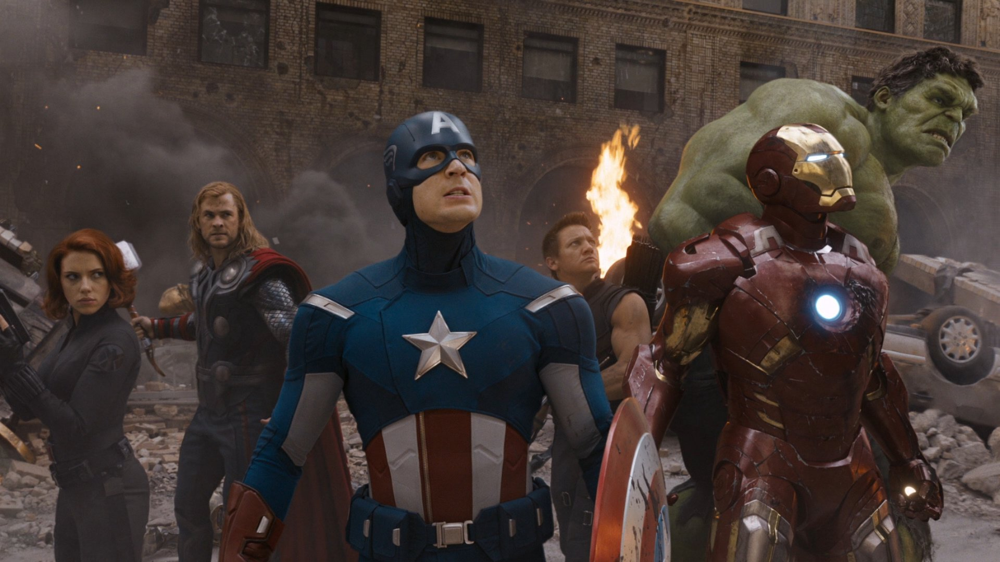
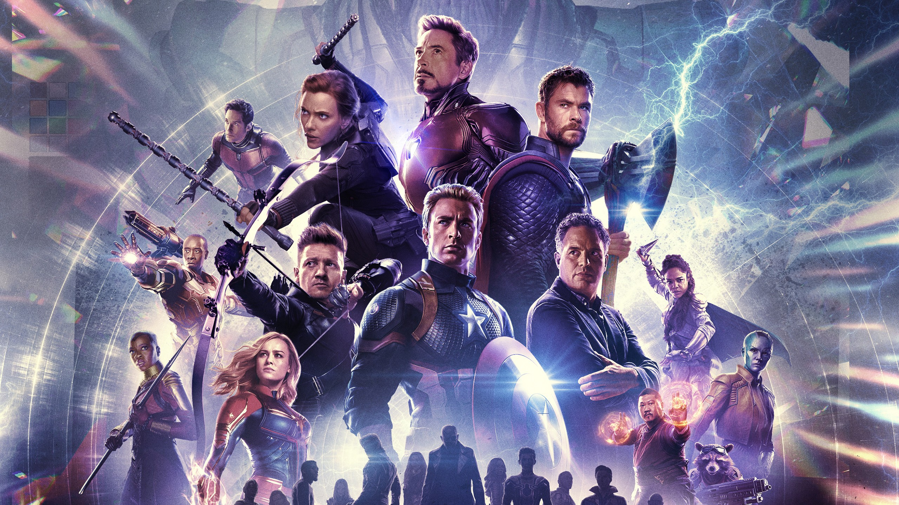
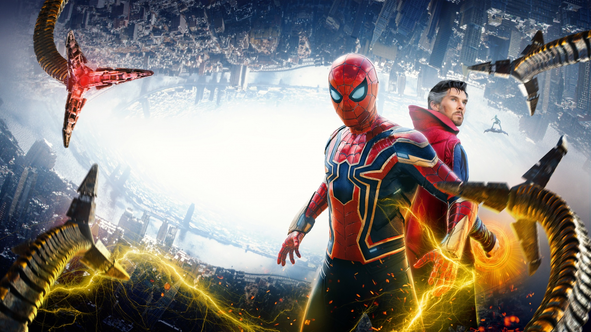

Marvel Studios
Marvel Studios es una compañía de producción de cine y televisión estadounidense conocida por crear el Universo Cinematográfico de Marvel (MCU), una franquicia de medios y universo compartido basado en personajes que aparecen en las publicaciones de Marvel Comics. Fundada originalmente como Marvel Films en 1993, Marvel Studios ha sido liderada por Kevin Feige desde 2007 y es una subsidiaria de Walt Disney Studios desde 2015.
La historia de Marvel Studios es notable por su crecimiento meteórico y su enfoque innovador en la creación de un universo compartido interconectado. Comenzaron a producir sus propias películas en 2004 y desde entonces han recuperado muchos de los derechos de los personajes que habían licenciado previamente.
MCU
El MCU (Universo Cinematográfico de Marvel) es una franquicia de medios centrada en una serie de películas de superhéroes. Al igual que el universo Marvel original en los cómics, fue establecido cruzando elementos comunes de la trama, configuraciones, elenco y personajes. Las películas del MCU se lanzan en grupos llamados “Fases”, con las primeras tres fases conocidas colectivamente como “La Saga del Infinito” y las siguientes tres fases como "La Saga del Multiverso".
El MCU también incluye series de televisión, cortometrajes, series digitales y literatura. Marvel Television expandió el universo a la televisión de red y al streaming antes de que la compañía se integrara en Marvel Studios en 2019. Marvel Studios comenzó a producir sus propias series de televisión para Disney+, comenzando con “WandaVision” en 2021 como parte de la Fase Cuatro. El MCU ha tenido un impacto cultural significativo, estableciendo un modelo para la creación de universos compartidos en el cine y la televisión, y ha recibido elogios tanto de la crítica como del público por su enfoque interconectado y su narrativa expansiva.
"Iron Man" marcó el inicio del Universo Cinematográfico de Marvel (MCU). La película cuenta la historia de Tony Stark, un industrial multimillonario y genio inventor que es secuestrado y obligado a construir un arma devastadora. En lugar de eso, usando su inteligencia y astucia, Tony construye un traje de alta tecnología y escapa del cautiverio. Este acto heroico da nacimiento a Iron Man, un nuevo defensor para el mundo moderno.

"The Avengers" es un hito en el MCU, siendo la primera gran película de crossover que reúne a varios superhéroes. En esta película, el director de S.H.I.E.L.D., Nick Fury, convoca a Iron Man, Capitán América, Hulk, Thor, Black Widow y Hawkeye para luchar contra la amenaza de Loki y su ejército extraterrestre, los Chitauri. La película fue aclamada por su dirección, efectos visuales, secuencias de acción, actuaciones y banda sonora, y rompió récords de taquilla como el estreno más grande de un fin de semana y la película más rápida en recaudar $1 mil millones a nivel mundial.

"Avengers: Endgame" es la culminación épica de una década de películas del MCU, donde los héroes sobrevivientes buscan revertir los efectos del chasquido de Thanos en "Avengers: Infinity War". La película no solo sirve como un final emocionante para muchas historias de personajes sino que también estableció nuevos récords, convirtiéndose en la película más taquillera en el momento de su lanzamiento.

"Spider-Man: No Way Home" lleva al MCU a nuevas alturas con una narrativa que abarca múltiples universos. Peter Parker enfrenta las consecuencias de su identidad revelada al mundo y busca la ayuda del Doctor Strange para restaurar su anonimato, lo que desencadena una serie de eventos que traen a villanos de diferentes realidades al universo de Parker. La película es una celebración de la historia cinematográfica de Spider-Man y ha sido elogiada por su innovación en la narrativa y efectos visuales.